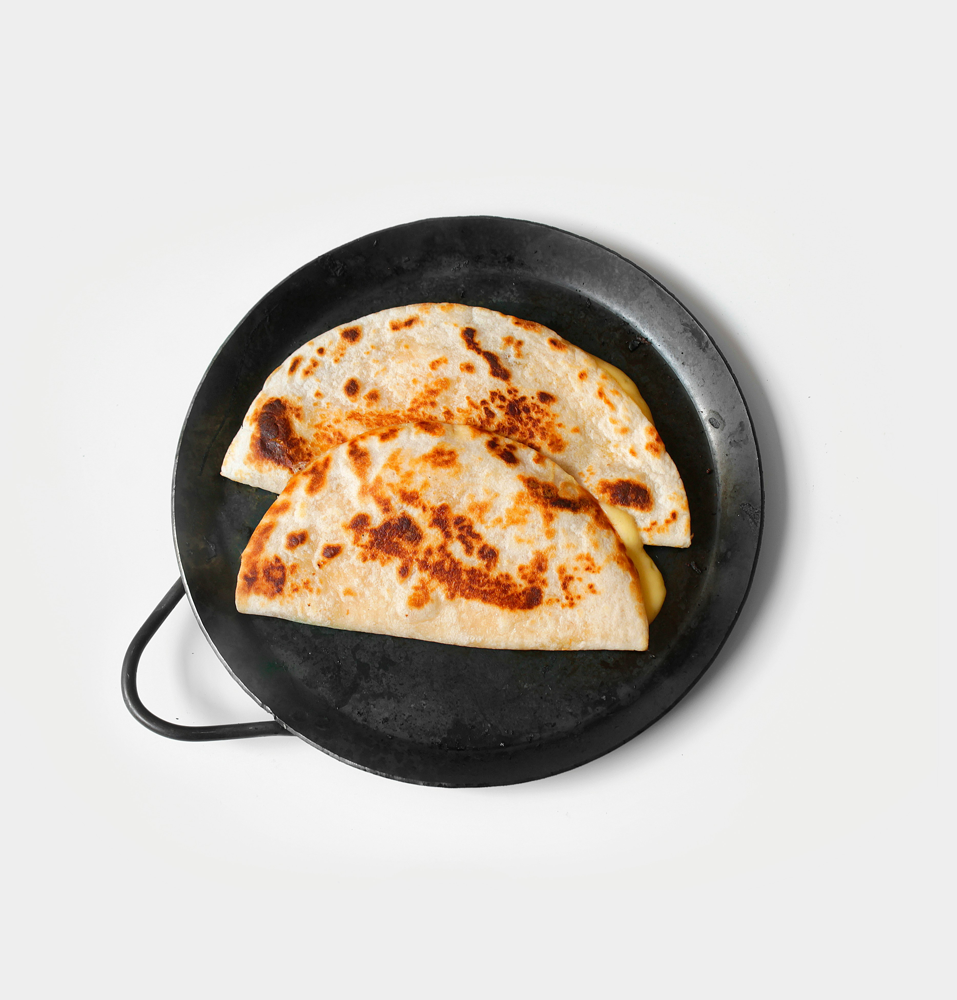

Chicken Sandwich

Description
This recipe will teach you how to make a simple but amazing chicken quesadilla using. The chicken quesadilla will take about 10-15 minutes and make 1 large quesadilla, but you need to already have cooked chicken. If you don't, visit our Basic Oven-Baked Chicken recipe.
Ingredients
- 1 cup cooked chicken, shredded or chopped
- 2 medium flour tortillas
- 1 cup shredded cheese of your choice
- 1 tbsp butter or oil
- Optional add ins:
- Sliced bell peppers
- Diced onions
- Salsa or hot sauce
- Sour cream or guacamole for serving
- Anything else you want
Steps
- In a bowl, mix the cooked chicken with cheese. Add any optional ingredients you like (e.g. peppers, salsa).
- Place a nonstick skillet over medium heat. Add butter or oil.
- Lay one tortilla flat in the pan. Spread the chicken-cheese mix evenly over it. Place the second tortilla on top.
- Cook for 2-3 minutes until the bottom is golden and the cheese starts to melt. Carefully flip and cook the other side for another 2-3 minutes.
- Transfer to a cutting board, let cool for a minute, then slice into wedges. Serve with sour cream, salsa, or guac if you like.
Yay! You just made a chicken quesadilla! I hope you loved this recipe!